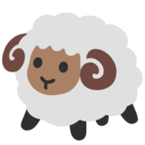

To load the game, click the (insert color) sphere. Click the (insert color) sphere to receive your first clue. Click the box that corresponds with the animal's name and the sound you hear. Guess correctly, and you'll hear some applause, but don't worry, you can always try again! Once you have matched all four animals with their sounds, click the (insert color) sphere to level up and explore a new environment 
Click the monkey to play Animemory!
We are so excited to present Animemory as our final project for Kode With Klossy Level 2! During project ideation, we decided that we wanted to not only build something fun and interactive, but to also build something that helps a target audience. Obviously, we value education and feel that engaging children's curiosity through tech is critical, so that they continue to seek out learning oppourtunities. Choosing to use A-Frame for the project was easy (how often do you get to put on a VR headset and explore a world that you coded yourself?), and we all agreed on programming an animal identification game for kids pretty quickly. Getting creative with our animals, habitats, and sounds was so enjoyable, as was the struggle and eventual success of coding logical functions. We hope you enjoy Animemory!
Coded with love,
Anya, Kennedy, and Elaine